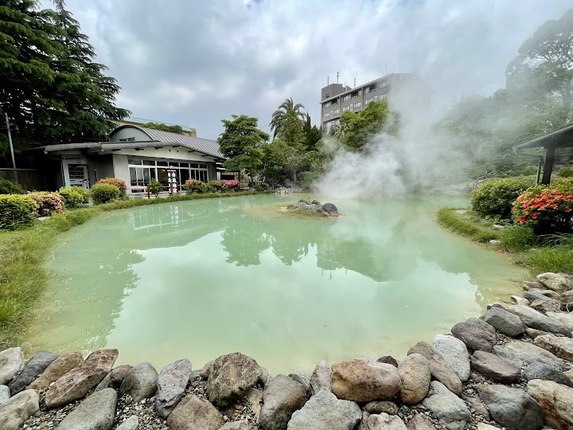
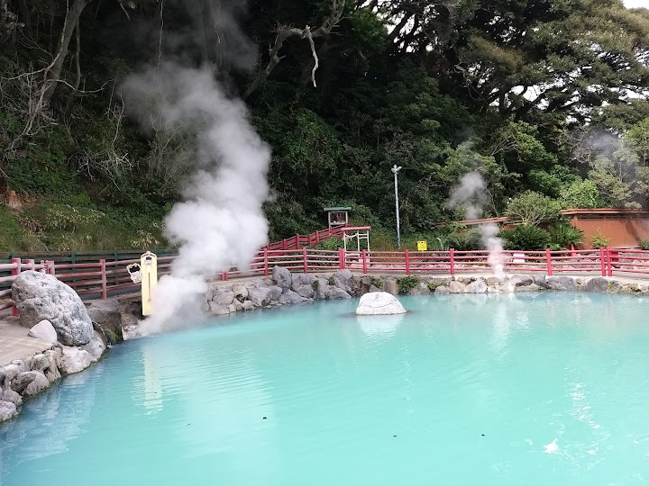
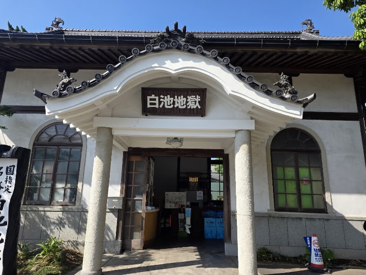
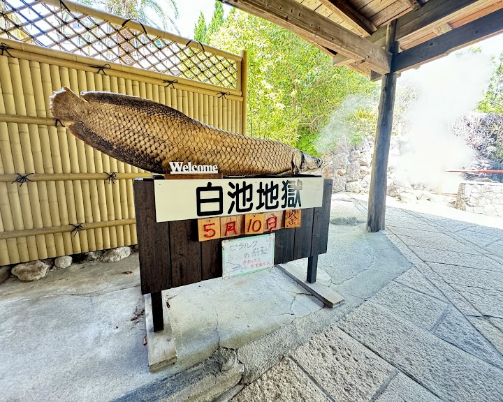
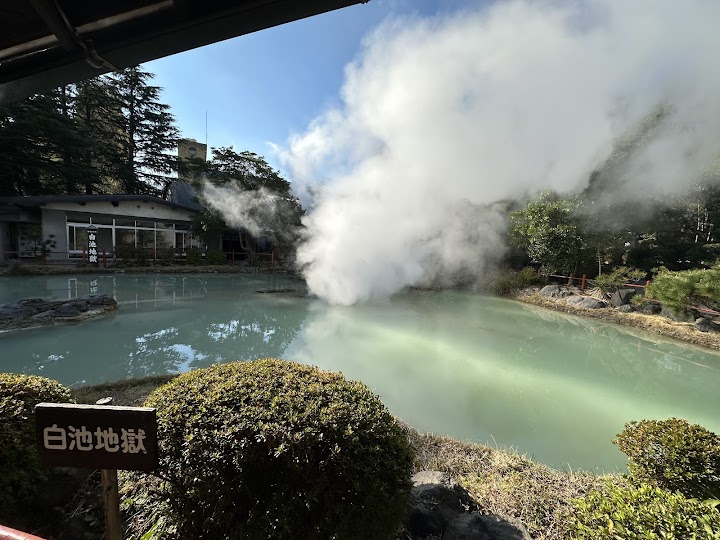

Shiraike Jigoku
Quaint natural attraction featuring a pluming hot spring, manicured traditional garden & aquarium.
Open in Google Maps (street view, more photos and reviews there)






Visitor tips on finding it and getting there
This is the fourth stop if you are following the walking route, and it has a much more peaceful and serene feel compared to the others. The water starts out clear but turns into a beautiful, milky pale blue-white color as it cools, which is really pretty to see. It’s a very calm and quiet spot with a nice traditional garden vibe. What makes this one unique is that they also have a small aquarium on the grounds. They use the natural geothermal heat from the springs to keep the water warm for tropical fish, including some very large piranhas and other exotic species. It’s a bit of a surprise to